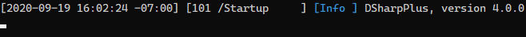
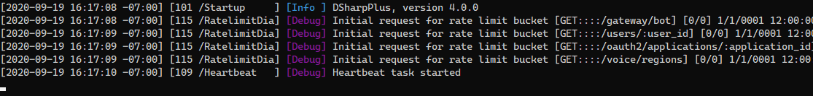
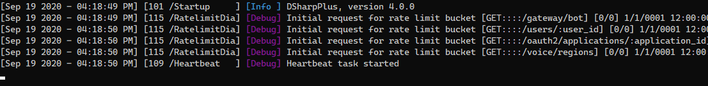

The Default Logger
DSharpPlus ships with a default logging implementation which is enabled automatically with no setup required.

This is a basic implementation that only sends log messages to the console.
Minimum Logging Level
You're able to adjust the verbosity of log messages via @DSharpPlus.DiscordConfiguration.
new DiscordConfiguration()
{
MinimumLogLevel = LogLevel.Debug
};
The example above will display level log messages that are higher than or equal to Debug.

Timestamp Format
You're also able to change the format of the log timestamp; this is also set through @DSharpPlus.DiscordConfiguration.
new DiscordConfiguration()
{
LogTimestampFormat = "MMM dd yyyy - hh:mm:ss tt"
};

For a list of all available format specifiers, check out the MSDN page for custom date and time format strings.
Log Levels
Below is a table of all log levels and the kind of messages you can expect from each.
| Name | Position | Description |
|---|---|---|
Critical |
5 | Fatal error which may require a restart. |
Error |
4 | A failure of an operation or request. |
Warning |
3 | Non-fatal errors and abnormalities. |
Information |
2 | Session startup and resume messages. |
Debug |
1 | Ratelimit buckets and related information. |
Trace |
0 | Websocket & REST traffic. |
Warning
The Trace log level is not recommended for use in production.
It is intended for debugging DSharpPlus and may display tokens and other sensitive data.